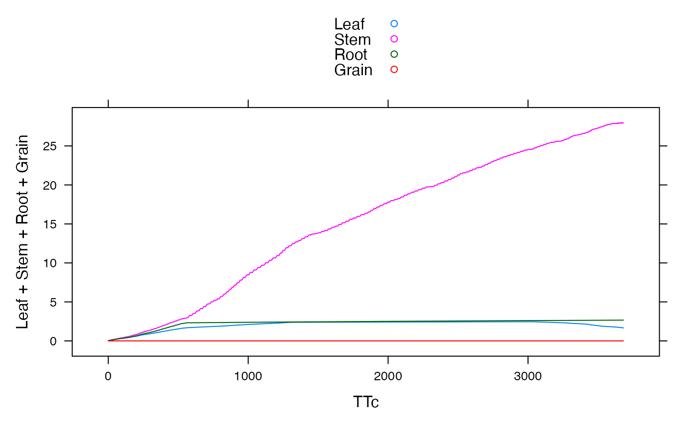

run_biocro.RdRuns a full crop growth simulation using the BioCro framework
run_biocro( initial_values = list(), parameters = list(), drivers, direct_module_names = list(), differential_module_names = list(), ode_solver = BioCro:::default_ode_solver, verbose = FALSE )
| initial_values | A list of named quantities representing the initial values of the differential quantities, i.e., the quantities whose derivatives are calculated by differential modules |
|---|---|
| parameters | A list of named quantities that don't change with time; must include a 'timestep' parameter (see `drivers` for more info) |
| drivers | A data frame of quantities defined at equally spaced time intervals. The time interval should be specified in the `parameters` as a quantity called 'timestep' having units of hours. The drivers must include columns for either (1) 'time' (in units of days) or (2) 'doy' and 'hour'. |
| direct_module_names | A character vector or list specifying the names of direct modules to use in
the system; a list of available modules can be obtained via the
|
| differential_module_names | A character vector or list specifying the names of differential modules to
use in the system; a list of available modules can be obtained via the
|
| ode_solver | A list specifying details about the numerical ODE solver. The required elements are:
|
| verbose | A logical variable indicating whether or not to print dynamical system
validation information. (More detailed startup information can be obtained
with the |
run_biocro is the most important function in the BioCro package. The
input arguments to this function are used to define a dynamical system and
solve for its time evolution during a desired time period. For more details
about how this function operates, see the BioCro II paper.
A data frame where each column represents one of the quantities included in the simulation (with the exception of the parameters, since their values are guaranteed to not change with time) and each row represents a time point
# Example: running a sorghum simulation using weather data from 2005 result <- run_biocro( sorghum_initial_values, sorghum_parameters, get_growing_season_climate(weather2005), sorghum_direct_modules, sorghum_differential_modules, sorghum_ode_solver, TRUE ) #> #> System startup information: #> #> [pass] No quantities were defined multiple times in the inputs #> #> [pass] All module inputs were properly defined #> #> [pass] All differential module outputs were included in the initial values #> #> [pass] There are no cyclic dependencies among the direct modules. #> #> ODE solver description: #> Name: auto #> This ode_solver chooses between two defaults depending on the type of system it integrates #> ode_solver used for dynamical systems that do not require the Euler method: #> Name: rsnbrk #> Output step size: 1.000000 #> Relative error tolerance: 0.000010 #> Absolute error tolerance: 0.000010 #> Maximum attempts to find a new step size: 200 #> ode_solver used for dynamical systems that require the Euler method: #> Name: homemade_euler #> #> The ODE solver reports the following: #> The ode_solver for dynamical systems that require the Euler method was used. #> It reports the following information: #> N/A #> The dynamical system reports the following: #> 4296 derivatives were calculated #> lattice::xyplot( Leaf + Stem + Root + Grain ~ TTc, data=result, type='l', auto=TRUE ) 